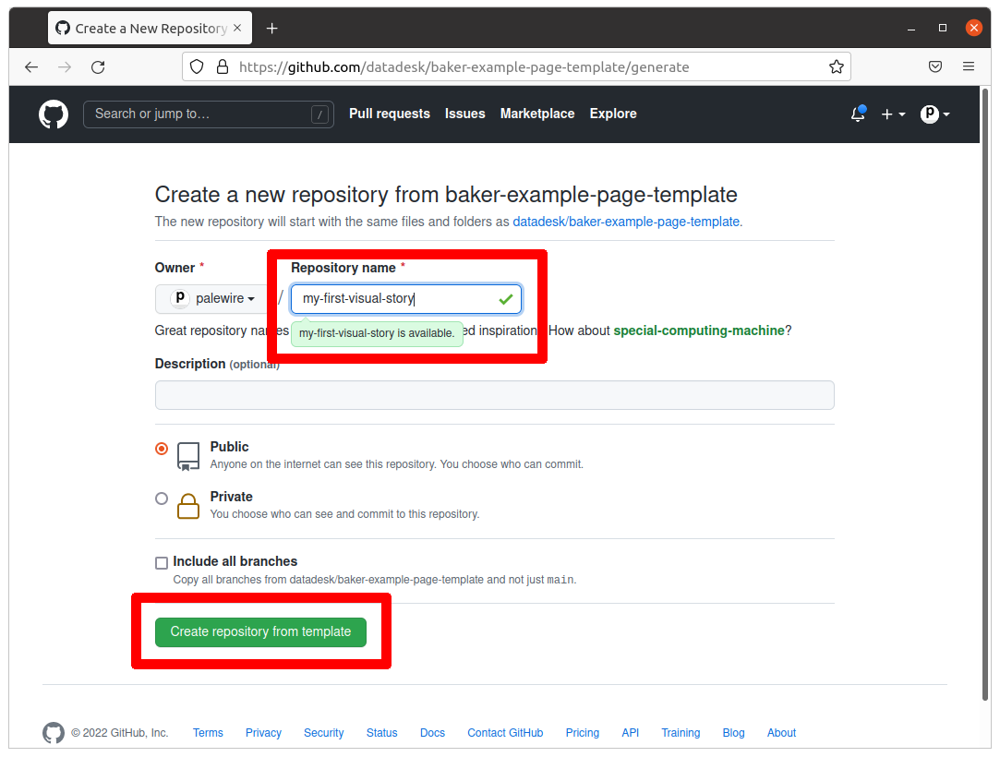

3. Git¶
This chapter will show you how to get a code repository up and running on your computer.
3.1. Create a code directory¶
First things first. It always helps to store all your code in the same place, instead of haphazard folders around your computer. This way, you always know where to look if you need to find a project.
Let’s settle the issue on the command-line. Open the terminal of your choice. It will start you off in your computer’s home directory, much like your file explorer.
Let’s verify that using a command called pwd, which stands for present working directory. The output is the full path of your terminal’s current location in the file system. You should get back something like /Users/palewire/, the path to your home directory.
pwd
Next let’s enter the ls command to see all of its subdirectories. The terminal should print out the same list of folders you can see in your home directory via the file explorer.
ls
Our first task is to create a folder to store our code.
Use the mkdir command to create a new directory in the same style as the Desktop, Documents and Downloads folders included by most operating systems.
We will name this folder Code. To verify the command works, open the file explorer and navigate to your home folder. After it’s run, you should see the new directory alongside the rest.
mkdir Code
Now jump into the new directory with the cd command, which operates the same as double clicking on a folder in your file explorer.
cd Code
3.2. Create a repository¶
Visit GitHub and find the homepage for baker-example-page-template repository published the Los Angeles Times’s datadesk account. It can be found at github.com/datadesk/baker-example-page-template.

This is a special kind of repository known as a template. It’s designed to serve as a starting point for new projects. Click the green “use this template” button near the middle of the page to get started.

On the next page, fill in a name for your copy of the repository. You can pick anything. Our example will use my-first-visual-story.

3.3. Clone the repository¶
Return to your terminal. Use gh to login to GitHub, which will verify that your computer has permission to access and edit the repositories owned by your account.
gh auth login
After you authenticate, it’s time to clone the new repository we created. Edit the code below by inserting your user name and repository. Then run it.
gh repo clone <your-username>/<your-repo>
In my case, the command looks like this:
gh repo clone palewire/my-first-visual-story
After clone completes, run the ls command again. You should see a new folder created by gh.
ls
Use cd to move into the directory, where we can begin work.
cd my-first-visual-story
We’ve got our starter kit installed. Let’s get it up and running.